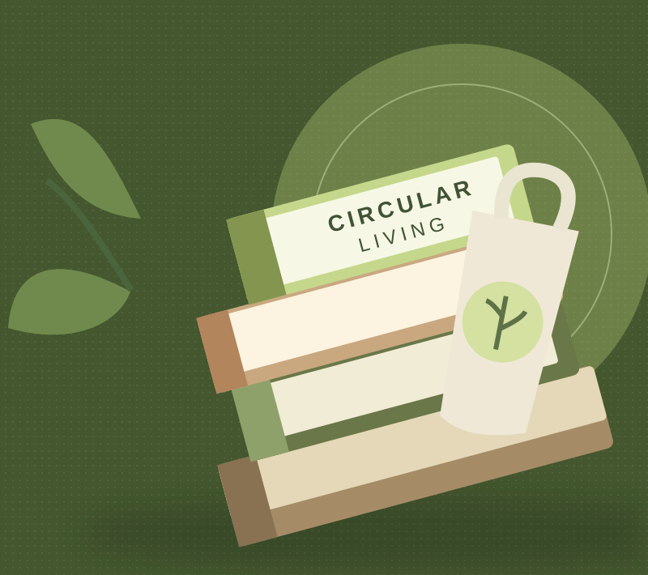
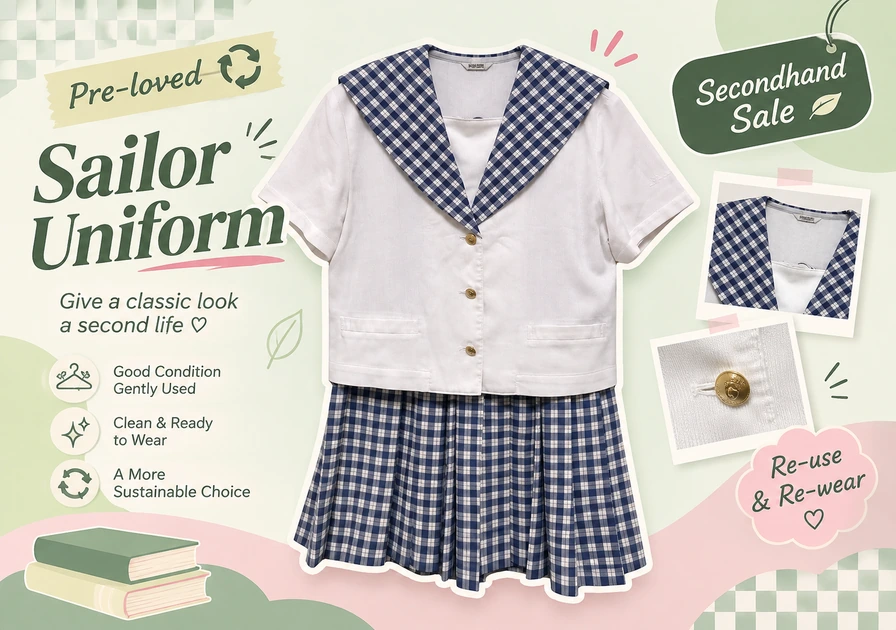

✳︎ THE CAMPUS CIRCULARITY PROJECT
Good things
deserve another
life.
From last semester's textbooks to your next favorite find. Exchange more, waste less, and make every small action count.
Designed by lilya.

PASS IT ON↗︎KEEP IT GOING
PRE-LOVED OBJECTSNEW POSSIBILITIES / 2026
01 / THE EXCHANGESomething good
Something good
is waiting for you.
Discover useful things from other students. A little less waste, a lot more value.
02 / THE IDEANot just less waste.
Not just less waste.
A better cycle.
One connected campus system gives reusable objects a new home and gives the facilities team clearer, more useful information.
PARTNER · AD
As you could see, this is a small advertisement
Help Jadeite! Jadeite hope to sell her sailor suit as a second-hand item. If interested, please contact her at: 133xxxx3096...
DEMO AD PLACEMENT · NO REAL COMMERCIAL PARTNERSHIP

STUDENT PORTAL / MY HOMEA little more
A little more
good, every day.
Welcome back, Alex. Here's what is happening in your circular campus.
AMAlex MorganSTUDENT DEMO · NO REAL ACCOUNT
MY NEXT STEPSQUICK ACTIONS
What will you
pass on next?
PERSONAL ACTIVITY
THE PERSONAL IMPACT VIEWMeasured impact: Not yet tracked in this demo. Only verified events and sample points are shown.
AM
STUDENT PORTAL / MY PROFILEMy little
My little
corner of ReLoop.
Alex Morgan · Demo student account. Your information here is illustrative, not campus identity data.
65RELOOP POINTS
PRIVACY BY DESIGN · No genuine student ID, private contact details, dorm room or payment information is stored or displayed.
MODULE A / CAMPUS EXCHANGE HUBGood finds.
Good finds.
Better stories.
From dorm essentials to second-hand textbooks. Find your next useful thing, right here on campus.
A / 01
08DEMO ITEMS
IN THE EXCHANGE
IN THE EXCHANGE
◎
No items found
Try another category or a simpler search.
A LITTLE REMINDEREvery handover
Every handover
is a chance to reuse.
Reservations hold an item for 24 hours. A seller has 12 hours to respond in the proposed system. The demonstration simulates seller acceptance and both QR confirmations.
MODULE B / CIRCULAR ACTIONS & REWARDSSmall actions.
Small actions.
Longer impact.
Reuse first. Recycle responsibly when something can't be reused. Earn demo points for verified circular actions.
02 / SMARTER SORTINGNot sure where
Not sure where
it belongs?
Example category guidance for a hypothetical campus. Always check the actual university's sorting rules.
03 / REQUEST VERIFICATIONSTAFF REVIEW REQUIRED
Record a circular action.
Submitting a record does not automatically earn points. A demo staff member must approve it first.
DEMO ONLY · No real QR, collection or reward is processed.04 / YOUR RELOOP WALLETGood actions
Good actions
are worth remembering.
65
RELOOP POINTSILLUSTRATIVE BALANCE
A shared ledger keeps track of approved activities and demo redemptions. Featured exposure is labeled and capped at 10% of marketplace results in the proposal.
Available rewards ↗︎
Your activity Latest five
MODULE C / CAMPUS OPERATIONS & INTELLIGENCEBetter decisions.
Better decisions.
Less left behind.
One place for staff verification, collection-point visibility and practical next steps.
STAFF DEMONSTRATION ENVIRONMENT All metrics below are simulated.
COLLECTION QUALITY
ILLUSTRATIVE SAMPLEWhere support is needed.
Simulated sorting contamination rate by campus area. Higher rates indicate more incorrectly sorted items in the mock audit sample.
Sample calculation: 49 incorrectly sorted items out of 300 checked items = 16.3% overall. This is not measured campus performance.
ACTIONABLE INSIGHT / 01
North Residence needs a little attention.
Its simulated contamination rate is the highest at 24%. Review signage, arrange an ambassador visit and reassess after four weeks.
Recommended follow-upSTAFF REVIEW / VERIFICATION
1 PENDINGCheck before you reward.
Approve or reject submitted circular actions. Only approved entries affect the simulated points ledger.
OPERATIONS / FACILITIES
Keep the loop moving.
Track simulated collection points and create or resolve a maintenance task.
Work orders
STAFF / TRUST & SAFETYCare keeps
0 OPENCare keeps
the exchange safe.
Review flagged listings and reports. Human decision only; no automatic account punishment.
Proposed Part 2 policy: disputed exchange records are frozen pending review; volunteer response target is 2 days. No actual campus sanctions or messages are processed.
STAFF / SUSTAINABILITY INTELLIGENCEKnow what
SYNTHETIC SCENARIOKnow what
we can measure.
Separate future RFP targets from synthetic audit samples and real actions made inside this demo.
SAMPLE ACTIONABLE INSIGHT
North Residence needs clearer sorting signs.
Illustrative audit: 24 incorrect items out of 100. Create a work order, review signage, then check the location again in four weeks. Improvement is not assumed.
Weight diverted, annual verified transactions, campus MAU and traceability cannot be calculated from the present local prototype. Targets are not results.
STAFF / AUDIT & GOVERNANCEA clear record
FRONTEND LOG ONLYA clear record
of every decision.
Local illustrative event log: timestamps, demo role, record and outcome. It is not a tamper-proof compliance audit.
Proposed governance policy: personal data deletion after 24 months of inactivity; operational audit retention for 3 years. Neither policy is enforced by this demo.
ⓘ This workspace is a frontend proof of concept. There is no campus identity integration, live sensor feed, security enforcement or real-world waste data.